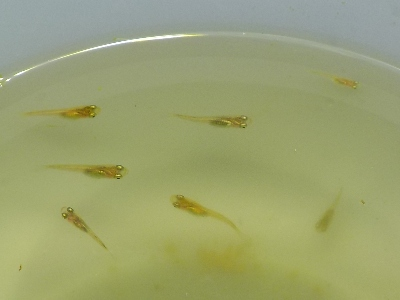
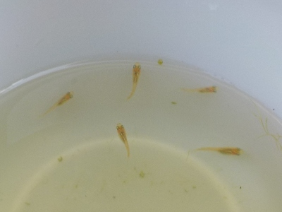
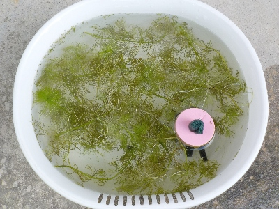
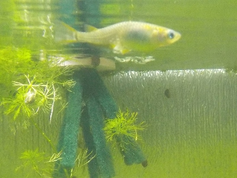

台風が来るみたいなので、稚魚を7匹水槽に入れました。
2024/08/28

稚魚の桶は軒下にあるので、よほど酷い雨じゃないかぎり大丈夫ですが、念のため大きい稚魚をすくって水槽に移しました。
1匹小さいのが混ざって入って計7匹です。
水槽の個体数が増えてちょっとにぎやかになりました。
2024/08/28

稚魚の桶は軒下にあるので、よほど酷い雨じゃないかぎり大丈夫ですが、念のため大きい稚魚をすくって水槽に移しました。
1匹小さいのが混ざって入って計7匹です。
水槽の個体数が増えてちょっとにぎやかになりました。
2024/08/18

稚魚が成長したので、親がいる水槽に移動しました。
この大きさだったら親に食べられることはないでしょう。
2024/07/02

産卵床と水草を、屋外のタライに入れました。
たぶん卵があって、そのうち稚魚が泳ぐようになるでしょう。
2024/06/21

水草が増えているので水槽内で繁殖できそうですが、念の為産卵床を作りました。
今水槽には10数匹しかいないので、減少も考えて20匹くらい増やしたいです。
選別するつもりはありません。